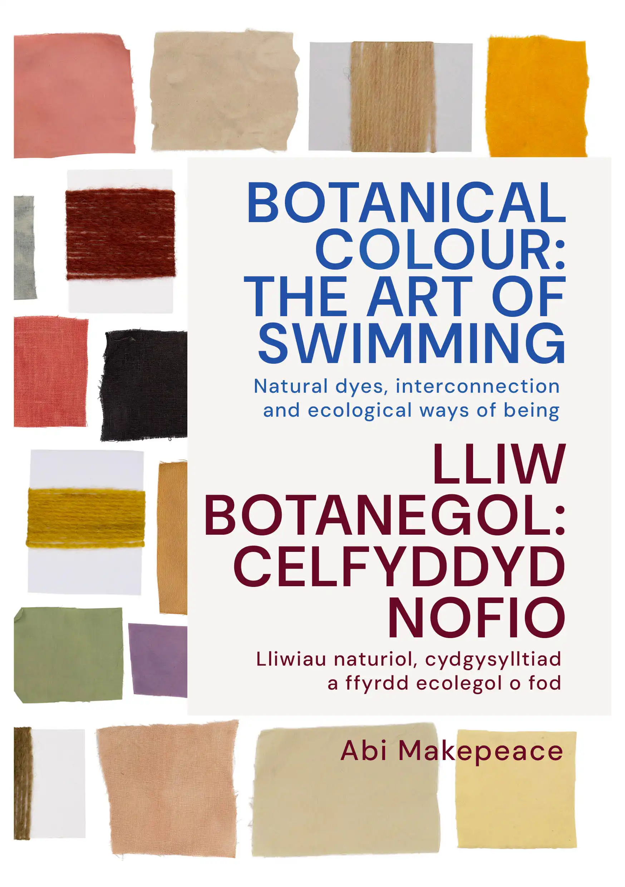

Ymchwil a Chyhoeddiadau
Trwy gydol Botanical Colour: The Redpath Way, daeth tri thema i’r amlwg o’r ymchwil: Lliw, Alcemi ac Arloesedd, ac Un i gyd.
Daeth y rhain yn sail i gyhoeddiad printiedig a chyfres o draethodau sain a ddyluniwyd i gael eu profi gyda’i gilydd.
Wrth i chi symud drwy’r tudalennau, mae’r sain yn datblygu ochr yn ochr â nhw — darnau o hanesion llafar, recordiadau maes, a cherddoriaeth, a gasglwyd drwy gydol y prosiect.
Cynhyrchwyd y cyhoeddiad yn wreiddiol mewn print a’i rannu’n rhad ac am ddim yn arddangosfa Gardd Fotaneg Genedlaethol Cymru. Mae fersiwn ddigidol ar gael i’w harchwilio yma, ochr yn ochr â’r gwaith sain llawn.
Profi’r cyhoeddiad a’r traethodau sain:
peoplescollection.wales/collections/3023706
Dyluniad cyhoeddiad: Aurelia Lange
Dylunio sain a thraethodau sain: Sam Bardsley
